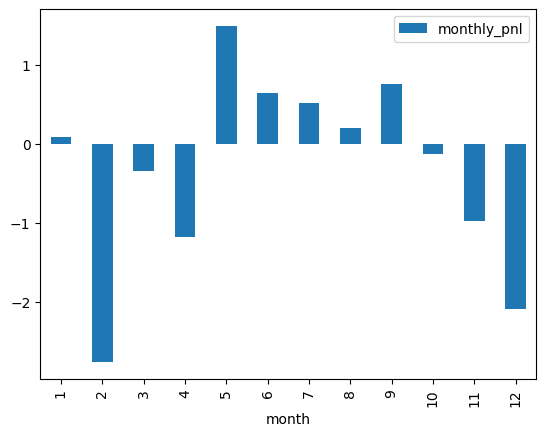
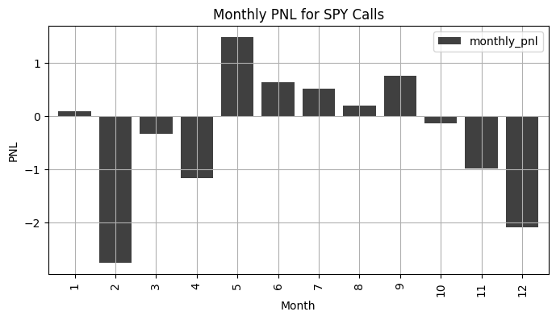

import numpy as np
import pandas as pd
import yfinance as yf
yf.pdr_override()
from pandas_datareader import data as pdr
%matplotlib inline10 Bar Charts with pandas
The purpose of this chapter is to demonstrate how to easily generate bar charts with the pandas built-in .plot() function.
We apply this technique to the task of visualizing monthly pnls for the data set in the spy_2018_call_pnl.csv data file.
10.1 Load Packages
Let’s begin by loading the packages we need:
Knowledge Challenge: What is the purpose of this line of code in the above cell: %matplotlib inline?
Solution
# plotting graphs below code cells10.2 Reading-In Data
Next, let’s read in the data from the CSV file.
df_pnl = pd.read_csv('spy_2018_call_pnl.csv')
df_pnl.head()| underlying | upx | type | expiration | data_date | strike | bid | ask | implied_vol | delta | dly_opt_pnl | dly_dh_pnl | |
|---|---|---|---|---|---|---|---|---|---|---|---|---|
| 0 | SPY | 266.529999 | call | 2018-01-19 | 2017-12-15 | 270 | 1.14 | 1.16 | 0.068257 | 0.328344 | -0.02 | 0.000000 |
| 1 | SPY | 268.230011 | call | 2018-01-19 | 2017-12-18 | 270 | 1.68 | 1.69 | 0.071450 | 0.421353 | -0.53 | 0.558189 |
| 2 | SPY | 267.250000 | call | 2018-01-19 | 2017-12-19 | 270 | 1.39 | 1.41 | 0.074841 | 0.365808 | 0.28 | -0.412931 |
| 3 | SPY | 267.100006 | call | 2018-01-19 | 2017-12-20 | 270 | 1.10 | 1.11 | 0.070911 | 0.327058 | 0.30 | -0.054869 |
| 4 | SPY | 267.540009 | call | 2018-01-19 | 2017-12-21 | 270 | 1.31 | 1.32 | 0.072183 | 0.372113 | -0.21 | 0.143906 |
This data consists of daily PNLs from 12 different SPY short call trades throughout 2018.
10.3 Wrangling
First, we will refactor the expiration and data_date columns to datetime using the pd.to_datetime() method.
df_pnl['expiration'] = pd.to_datetime(df_pnl['expiration'])
df_pnl['data_date'] = pd.to_datetime(df_pnl['data_date'])
df_pnl.head()| underlying | upx | type | expiration | data_date | strike | bid | ask | implied_vol | delta | dly_opt_pnl | dly_dh_pnl | |
|---|---|---|---|---|---|---|---|---|---|---|---|---|
| 0 | SPY | 266.529999 | call | 2018-01-19 | 2017-12-15 | 270 | 1.14 | 1.16 | 0.068257 | 0.328344 | -0.02 | 0.000000 |
| 1 | SPY | 268.230011 | call | 2018-01-19 | 2017-12-18 | 270 | 1.68 | 1.69 | 0.071450 | 0.421353 | -0.53 | 0.558189 |
| 2 | SPY | 267.250000 | call | 2018-01-19 | 2017-12-19 | 270 | 1.39 | 1.41 | 0.074841 | 0.365808 | 0.28 | -0.412931 |
| 3 | SPY | 267.100006 | call | 2018-01-19 | 2017-12-20 | 270 | 1.10 | 1.11 | 0.070911 | 0.327058 | 0.30 | -0.054869 |
| 4 | SPY | 267.540009 | call | 2018-01-19 | 2017-12-21 | 270 | 1.31 | 1.32 | 0.072183 | 0.372113 | -0.21 | 0.143906 |
We are interested in total pnl, which is the sum of the option pnl and the delta-hedge PNL. Let’s add a column called dly_tot_pnl which captures this logic.
df_pnl['dly_tot_pnl'] = df_pnl['dly_opt_pnl'] + df_pnl['dly_dh_pnl']
df_pnl.head()| underlying | upx | type | expiration | data_date | strike | bid | ask | implied_vol | delta | dly_opt_pnl | dly_dh_pnl | dly_tot_pnl | |
|---|---|---|---|---|---|---|---|---|---|---|---|---|---|
| 0 | SPY | 266.529999 | call | 2018-01-19 | 2017-12-15 | 270 | 1.14 | 1.16 | 0.068257 | 0.328344 | -0.02 | 0.000000 | -0.020000 |
| 1 | SPY | 268.230011 | call | 2018-01-19 | 2017-12-18 | 270 | 1.68 | 1.69 | 0.071450 | 0.421353 | -0.53 | 0.558189 | 0.028189 |
| 2 | SPY | 267.250000 | call | 2018-01-19 | 2017-12-19 | 270 | 1.39 | 1.41 | 0.074841 | 0.365808 | 0.28 | -0.412931 | -0.132931 |
| 3 | SPY | 267.100006 | call | 2018-01-19 | 2017-12-20 | 270 | 1.10 | 1.11 | 0.070911 | 0.327058 | 0.30 | -0.054869 | 0.245131 |
| 4 | SPY | 267.540009 | call | 2018-01-19 | 2017-12-21 | 270 | 1.31 | 1.32 | 0.072183 | 0.372113 | -0.21 | 0.143906 | -0.066094 |
As the final step of our wrangling, let’s extract the year and month of the expiration, as this is what we will use for grouping.
df_pnl['year'] = df_pnl['expiration'].dt.year
df_pnl['month'] = df_pnl['expiration'].dt.month
df_pnl.head()| underlying | upx | type | expiration | data_date | strike | bid | ask | implied_vol | delta | dly_opt_pnl | dly_dh_pnl | dly_tot_pnl | year | month | |
|---|---|---|---|---|---|---|---|---|---|---|---|---|---|---|---|
| 0 | SPY | 266.529999 | call | 2018-01-19 | 2017-12-15 | 270 | 1.14 | 1.16 | 0.068257 | 0.328344 | -0.02 | 0.000000 | -0.020000 | 2018 | 1 |
| 1 | SPY | 268.230011 | call | 2018-01-19 | 2017-12-18 | 270 | 1.68 | 1.69 | 0.071450 | 0.421353 | -0.53 | 0.558189 | 0.028189 | 2018 | 1 |
| 2 | SPY | 267.250000 | call | 2018-01-19 | 2017-12-19 | 270 | 1.39 | 1.41 | 0.074841 | 0.365808 | 0.28 | -0.412931 | -0.132931 | 2018 | 1 |
| 3 | SPY | 267.100006 | call | 2018-01-19 | 2017-12-20 | 270 | 1.10 | 1.11 | 0.070911 | 0.327058 | 0.30 | -0.054869 | 0.245131 | 2018 | 1 |
| 4 | SPY | 267.540009 | call | 2018-01-19 | 2017-12-21 | 270 | 1.31 | 1.32 | 0.072183 | 0.372113 | -0.21 | 0.143906 | -0.066094 | 2018 | 1 |
10.4 groupby() and agg()
We are interested in graphing the PNLs by expiration, so let’s sum up the dly_tot_pnl by the year and month of the expiration.
df_monthly = \
df_pnl.groupby(['year', 'month'])['dly_tot_pnl'].agg([np.sum]).reset_index()
df_monthly.head()| year | month | sum | |
|---|---|---|---|
| 0 | 2018 | 1 | 0.091963 |
| 1 | 2018 | 2 | -2.759090 |
| 2 | 2018 | 3 | -0.340270 |
| 3 | 2018 | 4 | -1.174222 |
| 4 | 2018 | 5 | 1.487206 |
Before we proceed to graphing, let’s change the name of the aggregated pnl column to something more meaningful.
df_monthly.rename(columns={'sum':'monthly_pnl'}, inplace=True)10.5 Visualizing the Data
Creating a simple bar graph of the monthly_pnls in df_monthly can be done easily with a single line of code.
df_monthly.plot(x='month', y='monthly_pnl', kind='bar');
While the above graph may be fine for EDA purposes, it still leaves much to be desired, especially if our intention is to share it with a broader audience.
The following code makes several of modifications to improve its appearance.
ax = \
df_monthly.\
plot(
x = 'month',
y = 'monthly_pnl',
kind='bar',
color='k', # color is grey
grid=True , # adding a grid
alpha=0.75, # translucence
width=0.8, # increasing the width of the bars
title='Monthly PNL for SPY Calls',
figsize=(8, 4), # modifying the figure size
);
ax.set_xlabel("Month"); # x axis label
ax.set_ylabel("PNL"); # y axis label
Code Challenge: Google and try to find how you create a horizontal bar graph using pandas.
Solution
ax = \
df_monthly.\
plot(
x = 'month',
y = 'monthly_pnl',
kind='barh', # changed to barh
color='k', # color is grey
grid=True , # adding a grid
alpha=0.75, # translucence
width=0.8, # increasing the width of the bars
title='Monthly PNL for SPY Calls',
figsize=(8, 4), # modifying the figure size
);
ax.set_xlabel("Month"); # x axis label
ax.set_ylabel("PNL"); 
10.6 A Few Words About Visualization
Visualizing data can be an effective way of communicating results to others, or exploring data on your own. The benefit of visualization comes into focus when we can convey a particular result more quickly and more viscerally with a graph rather than a table of numbers.
This is nicely illustrated by comparing our bar graph to the original DataFrame of data. Consider the following question:
What were the two worst PNL months for these SPY calls?
Do you find it easier to answer the question using the bar graph or the table? Explain why.
ax = \
df_monthly.\
plot(
x = 'month',
y = 'monthly_pnl',
kind = 'bar',
color='k', # color is grey
grid=True, # adding a grid
alpha=0.75, # translucence
width=0.8, # increasing the width of the bars
title='Monthly PNL for SPY Calls',
figsize=(8, 4), # modifying the figure size
);
ax.set_xlabel("Month"); # x axis label
ax.set_ylabel("PNL"); # y axis label
df_monthly| year | month | monthly_pnl | |
|---|---|---|---|
| 0 | 2018 | 1 | 0.091963 |
| 1 | 2018 | 2 | -2.759090 |
| 2 | 2018 | 3 | -0.340270 |
| 3 | 2018 | 4 | -1.174222 |
| 4 | 2018 | 5 | 1.487206 |
| 5 | 2018 | 6 | 0.644469 |
| 6 | 2018 | 7 | 0.516556 |
| 7 | 2018 | 8 | 0.195526 |
| 8 | 2018 | 9 | 0.753701 |
| 9 | 2018 | 10 | -0.133537 |
| 10 | 2018 | 11 | -0.979537 |
| 11 | 2018 | 12 | -2.085526 |